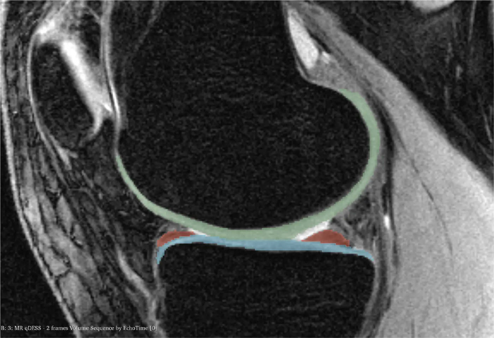
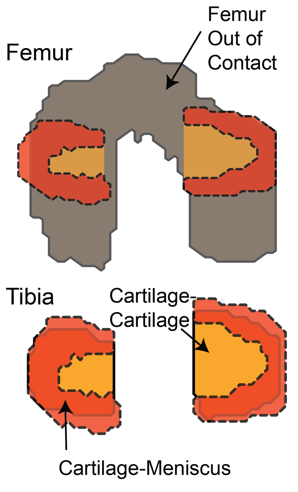

Computer Vision & Medical Image Segmentation
Developing robust semantic-segmentation methods for accurate, repeatable analysis of knee cartilage in medical images.

I’m interested in a deceptively simple question: what does everyday movement actually do to the knee? To answer it, I combine computer vision, medical image analysis, machine learning, and biomechanics to turn images and motion into measurements of how cartilage responds to daily activity.
When I’m not working on my dissertation, I tinker with on-device markerless motion analysis and multimodal models that learn from medical images and radiology reports. Away from the computer, I’m usually hiking, snowboarding, playing basketball, cooking, trying a new restaurant, or behind a camera.
My current work connects image-based measurement, computer vision, and experimental biomechanics to study cartilage structure, function, and recovery.
Developing robust semantic-segmentation methods for accurate, repeatable analysis of knee cartilage in medical images.

Quantifying cartilage strain and recovery across daily activities to understand how living joints respond to physiological loading.

Building repeatable whole-joint robotic models to measure acute cartilage deformation and recovery under near-physiological motion.
Journal of the Mechanical Behavior of Biomedical Materials
A robotic whole-joint model for measuring task-dependent cartilage compression and recovery under near-physiological loading.
Read paperSkeletal Radiology
Evaluated a deep-learning-derived imaging biomarker for predicting risk of total knee replacement.
Read paperArthritis & Rheumatology
Introduced an automated imaging measure associated with radiographic and clinical osteoarthritis outcomes.
Read paperWorking with Dr. John Galeotti and Dr. Axel Moore, I develop computer-vision, medical-image-analysis, and robotic methods to quantify cartilage deformation and recovery during physiological activities, with an emphasis on robust segmentation, image registration, and whole-joint biomechanics.
Working with Dr. Vijaya Kolachalama, I developed medical-imaging and predictive-modeling methods spanning knee imaging, computational pathology, and imaging-based biomarkers.
Working with Dr. Steve Rock at the Center for Automation Technologies and Systems (CATS), I built computer-vision and sensor-guided robotic systems for automated hydrogen-forklift fueling, including an on-site vision-guided alignment system.